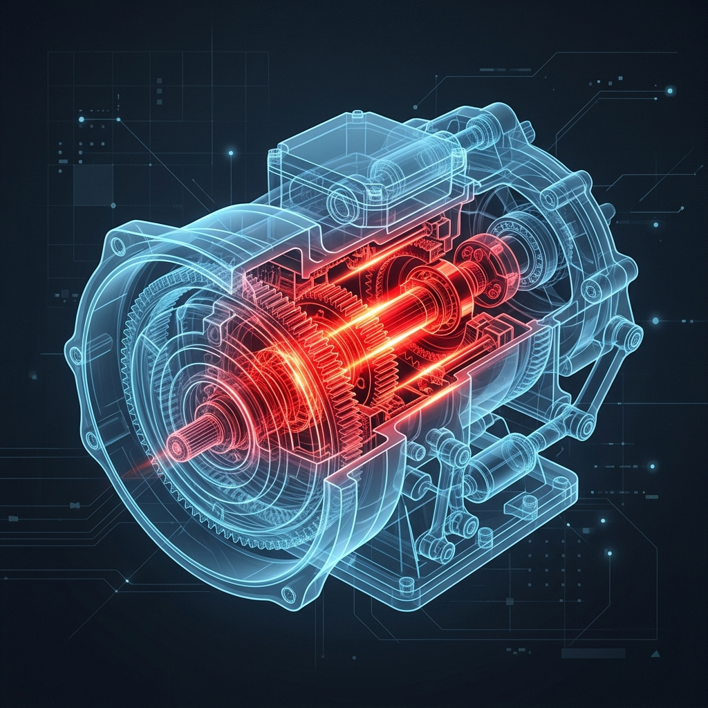
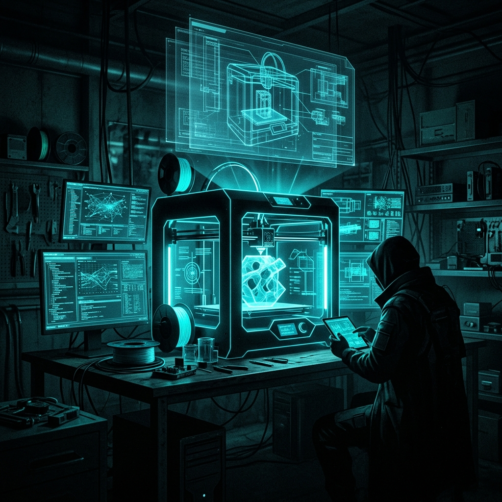
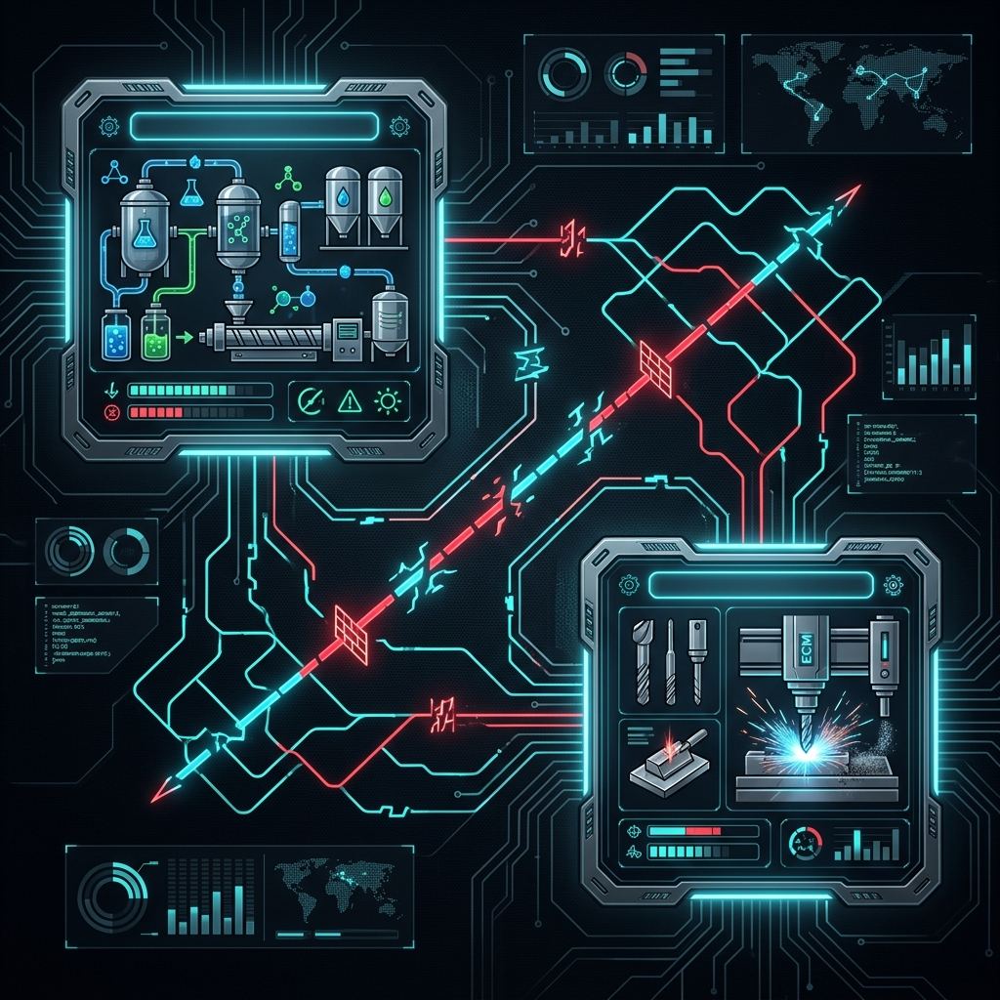
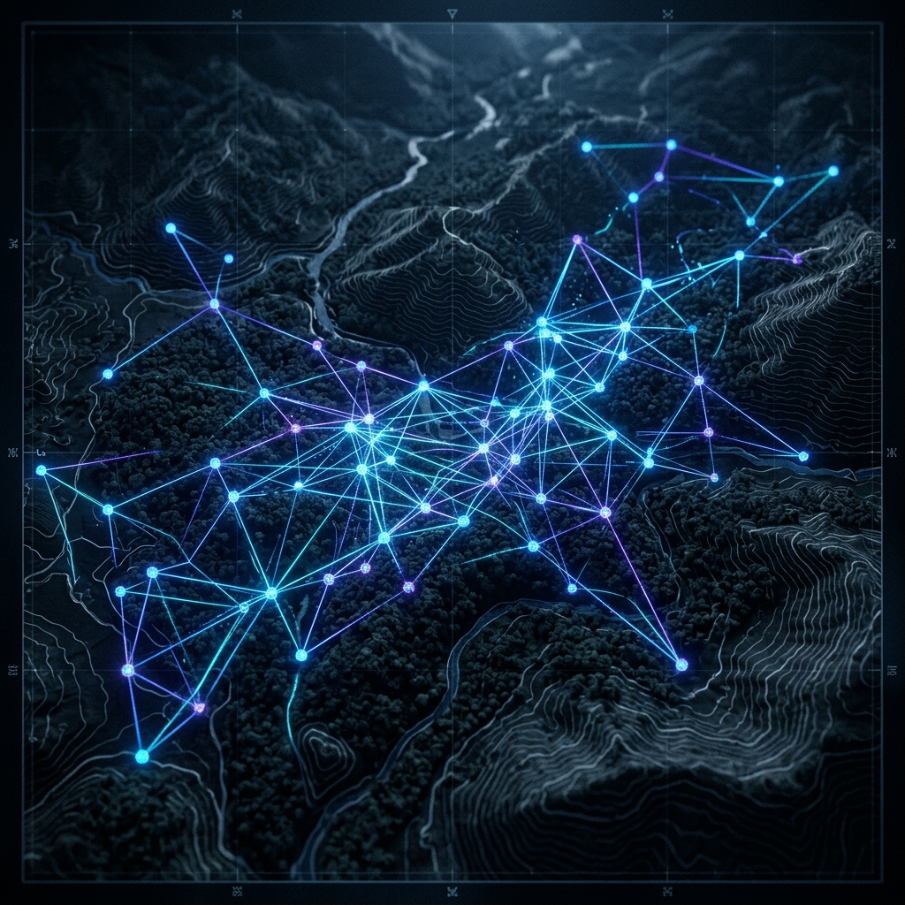

> REPORTE_FORENSE_V2.1.0
> ANALIZANDO_AMENAZA: MANUFACTURA_HÍBRIDA_3D
Análisis de inteligencia sobre cómo la fusión de la impresión 3D, el Mecanizado Electroquímico (ECM) y el vacío legal de los componentes de doble uso están reescribiendo la logística del mercado negro armamentístico.
El mayor error de apreciación en seguridad nacional es creer que la amenaza radica en "armas de plástico". La física lo impide: la munición 9mm genera presiones de 35,000 PSI (241 MPa). Ningún polímero resiste eso.
Armazón, culata, cargador. Proveen ergonomía y estructura, pero no sufren presión explosiva directa.
Cañón, cerrojo y percutor. Obligatoriamente forjados en acero. El proceso moderno utiliza la impresora 3D únicamente para facilitar el mecanizado de estas piezas metálicas.

Demostración de Veracidad: Este flujo no es teórico. A continuación se detalla la disponibilidad real (A fecha de 2026) de los materiales en el mercado legal abierto.
Descarga del plano CAD sin necesidad de Tor ni Dark Web compleja. Poseer datos geométricos no viola las leyes de armas.
Compra de los materiales estructurales. Ninguno requiere licencia, verificación de antecedentes, ni alerta a autoridades fiscales.
La impresora fabrica el 80% del volumen (Chasis) de forma automatizada. No hay olores químicos, no hay chispas, es indetectable térmicamente desde el exterior de un departamento residencial.
A través de electrólisis, se tallan las estrías en el tubo de acero en 20 minutos. No requiere tornos ni prensas masivas.
El plástico se une al acero mecanizado. Solo en este preciso momento, 7 días después, el individuo comete un delito punible por manufactura ilícita. Todo el proceso previo fue "legal".
Cómo las organizaciones criminales aplican estándares de control de calidad industrial para escalar su logística de forma indetectable.

FASE 1: CELULA DE PRUEBA (EL GARAJE)Un solo individuo opera en aislamiento. La meta no es producir en masa, sino dominar la ciencia de materiales y asimilar la lectura de planos.

FASE 2: BALCANIZACIÓN LOGÍSTICAPara evadir allanamientos que confisquen el arma entera, se divide la manufactura. Un Nodo imprime plásticos (Granja), otro Nodo distante tornea el metal vía ECM.
La célula necesita adquirir toneladas de material sin despertar a la inteligencia financiera (UIF). Evaden los protocolos "KYC" (Conoce a tu Cliente).

FASE 4: INDUSTRIA COMPLETA DESCENTRALIZADALa fábrica no es un edificio, es una red de nodos invisibles que ensamblan las armas bajo demanda en el terreno de conflicto.
Tradicionalmente, rayar el interior de un cañón para darle precisión requería herramientas industriales controladas. La química lo resolvió.
Fuerzas de Defensa del Pueblo (PDF)
Creación de "fábricas de jungla" propulsadas por energía solar. Demostraron que el diseño FGC-9 soporta la logística a nivel de guerra asimétrica ante el embargo de armas pesadas.
Cárteles Transnacionales
No imprimen armas completas, imprimen "Multiplicadores de Fuerza". Sistemas de estabilización para dejar caer explosivos C4 desde drones, y "Glock Switches" ($1.50 USD) que convierten pistolas semiautomáticas en ráfaga completa.
Operación Carmelo
Desmantelamiento de la primera fábrica supremacista. Evidencia de tubos preparados para ECM y manuales de fabricación de armas híbridas obtenidos mediante redes descentralizadas.
La amenaza final no es técnica, es el desplome del Costo Marginal. Una vez adquirida la impresora, armar a una célula cuesta menos del 10% del valor del mercado negro.
| COMPONENTE | MERCADO NEGRO | MANUFACTURA 3D | DIFERENCIAL |
|---|---|---|---|
| Carabina 9mm | $450 - $700+ USD | $150 - $250 USD | ↓ 65% Ahorro |
| Silenciador (Supresor) | $350 - $2,000 USD | $50 - $80 USD | ↓ 90% Ahorro |
| Glock Switch (Auto-Sear) | $250 - $500 USD | $1.50 USD | ↓ 99% Ahorro |